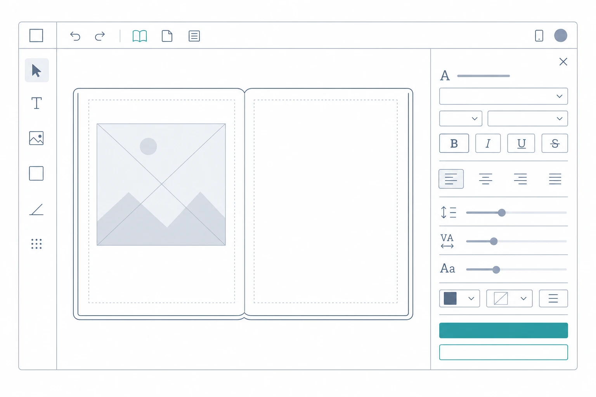

Plan: Book Text Style
Per-book default text style that seeds new text blocks and restyles all pages on demand — eliminating redundant per-page text setup in the web book editor.
Purpose
Give each book a single, reusable text style (font family, size, weight, color, alignment, optional shadow/background, and narration voice) that (a) automatically seeds every new text block created on any page of that book, and (b) can be pushed to all existing pages with one explicit "Apply to all pages" action. This removes the repetitive per-page re-selection of voice, font, and size that editors currently perform, and makes book-wide restyles a one-click operation instead of a page-by-page slog.
Problem
Every text block in the book editor starts from hardcoded defaults (Inter, 5%, weight 400, #000000, left-aligned, no voice — see handleAddElement in DraggableTextOverlayEditor.tsx). When an editor creates a new page, they manually re-select the voice, font, and font size to match the previous page — for every page of the book. And after styling a 20-page book, deciding "actually, use Lora instead of Inter" means editing every page's text by hand. There is no book-level concept of a text style at all: the books table stores nothing about typography, and each TextElement carries its full style independently.
Solution
Introduce a per-book text style stored in a new nullable books.default_text_style JSONB column, validated and materialized entirely on the web/server side so the TextElement wire format stays concrete and unchanged. New text blocks seed from the book style instead of hardcoded values. A "Book Style" drawer in the editor (wired to the currently dead Settings footer button) edits the style in one place, and an explicit Apply to all pages action transactionally rewrites the style fields of every existing overlay element in the book — preserving each element's text, position, size, and rotation — while invalidating stale composited images using the exact pattern the overlay save route already uses. Books without a saved style behave exactly as today.
Relevant Files
Existing Files
- existing
src/types/text-overlay.ts— single source of truth for overlay types; gainsBookTextStyle, defaults, validator, seed/apply helpers. - existing
prisma/schema.prisma—booksmodel gains thedefault_text_style Json?column. - existing
src/app/api/admin/books/[id]/route.ts— GET/PATCH extended to read/writedefaultTextStyle. - existing
src/app/api/admin/books/[id]/pages/[pageNumber]/overlay/route.ts— reference for the composite-invalidation pattern (clearscomposited_*fields on overlay change). - existing
src/hooks/useBookData.ts—BookDatatype anduseBookDetailsquery (TanStack Query) that feeds the editor. - existing
src/contexts/BookEditorContext.tsx— exposes the book style and the update/apply-all actions to the editor UI. - existing
src/components/text-overlay/DraggableTextOverlayEditor.tsx—handleAddElementseeds new elements from the book style via a new optional prop. - existing
src/components/editor/OverlayEditorPanel.tsx— footer Settings button (currently noonClick) opens the new drawer. - existing
src/app/admin/books/[id]/pages/[pageNumber]/overlay-editor/page.tsx— standalone overlay editor; passes the book style prop too. - existing
src/components/text-overlay/PropertyPanel.tsx— control patterns (sliders, selects, collapsible shadow/background) mirrored by the drawer. - existing
src/app/api/admin/books/[id]/pages/[pageNumber]/overlay-text/route.test.ts— API route test pattern (mocked prisma) to follow.
New Files
- new
prisma/migrations/<ts>_add_book_default_text_style/migration.sql— adds the column. - new
src/types/text-overlay.test.ts— unit tests for validator + seed/apply helpers. - new
src/app/api/admin/books/[id]/apply-text-style/route.ts— transactional bulk-apply endpoint. - new
src/app/api/admin/books/[id]/apply-text-style/route.test.ts— route tests. - new
src/components/editor/BookStyleDrawer.tsx— the Book Style drawer UI. - new
src/components/editor/BookStyleDrawer.test.tsx— drawer component tests.
Implementation Phases
IMPORTANT: Execute every phase and task step by step, in order, top to bottom.
Status markers: [] idle · [wip] in progress · [x] complete · [f] failed. All start as []; the Build Plan workflow updates them as it works.
[x] Phase 1: Data Foundation — Types, Helpers, Migration
Everything downstream depends on a well-tested BookTextStyle type and the database column. The helpers live in src/types/text-overlay.ts (the project's single source of truth for overlay types) and follow the same hand-rolled validation style as the existing validateTextElement.
1.1. Add BookTextStyle and helpers to src/types/text-overlay.ts
[x]Define the interface — style fields only; geometry (x/y/width/rotation) andtextdeliberately excluded:export interface BookTextStyle { fontFamily: OverlayFont; fontSize: number; // % of image height, clamped 0.5–50 fontWeight: FontWeight; color: string; textAlign: TextAlign; shadow?: TextShadow; background?: TextBackground; voiceId?: string; voiceName?: string; }[x]AddDEFAULT_BOOK_TEXT_STYLEmatching today's hardcoded editor defaults:{ fontFamily: "Inter", fontSize: 5, fontWeight: 400, color: "#000000", textAlign: "left" }.[x]AddvalidateBookTextStyle(raw: unknown): BookTextStyle— throws on unknownfontFamily/fontWeight/textAlign(reuseAVAILABLE_FONTS,FONT_WEIGHT_OPTIONS,TEXT_ALIGN_OPTIONS), clampsfontSizeto 0.5–50 (default 5), defaultscolorto#000000, passes through optionalshadow/background/voiceId/voiceName.[x]AddseedTextElement(style)returning the style-only subset used when creating an element.[x]AddbuildNewTextElement(style, overrides)— pure helper producing a fullTextElement(id viacrypto.randomUUID(), geometry defaultsx:10, y:10, width:30, rotation:0, text:"New Text"). This is whathandleAddElementwill call in Phase 3, extracted here so it is unit-testable without rendering the editor.[x]AddapplyBookTextStyle(config, style): TextOverlayConfig. Subtlety: the style is the source of truth for all style fields, including optional ones — an element's shadow/background/voice must be removed when the style doesn't define them, not left over:elements: config.elements.map((el) => { const { shadow, background, voiceId, voiceName, ...rest } = el; const next: TextElement = { ...rest, // id, text, x, y, width, rotation fontFamily: style.fontFamily, fontSize: style.fontSize, fontWeight: style.fontWeight, color: style.color, textAlign: style.textAlign, }; if (style.shadow) next.shadow = style.shadow; if (style.background) next.background = style.background; if (style.voiceId) next.voiceId = style.voiceId; if (style.voiceName) next.voiceName = style.voiceName; return next; })
1.2. Add the database column
[x]Inprisma/schema.prisma, add tomodel books:default_text_style Json?(nullable, no default —nullmeans "useDEFAULT_BOOK_TEXT_STYLE").[x]Runnpx prisma migrate dev --name add_book_default_text_style.[x]Runnpx prisma generate(repo convention after schema changes).
1.3. Unit tests — src/types/text-overlay.test.ts (new)
[x]validateBookTextStyle: valid payload round-trips; rejects bad font/weight/align with thrown errors; clampsfontSize(e.g. 99 → 50); defaults missing color/fontSize; preserves optional shadow/background/voice fields.[x]buildNewTextElement: returns allTextElementfields; style fields come from the style; geometry/text defaults present; two calls produce distinct ids.[x]applyBookTextStyle: replaces all style fields on every element; preservesid,text,x,y,width,rotation; removes shadow/background/voice when style omits them; preserves configversion; handles emptyelementsarray.
1.4. Testing Strategy
Vitest unit tests for the pure helpers (no React, no DB). Edge cases: clamping, optional-field removal, empty configs, invalid enum values.
[x]npx vitest run src/types/text-overlay.test.ts— all new helper tests pass.[x]npx tsc --noEmit— types compile, generated Prisma client includes the new column.
[x] Phase 2: API Layer — Read/Write Style + Apply-All Endpoint
Three server changes: expose the style on the existing book GET/PATCH, and add the bulk-apply endpoint. Route tests follow the existing mocked-prisma pattern in src/app/api/admin/books/[id]/pages/[pageNumber]/overlay-text/route.test.ts.
2.1. Extend GET /api/admin/books/[id]
[x]IncludedefaultTextStylein the response book object: parsebook.default_text_stylewithvalidateBookTextStyleinside try/catch; fall back toDEFAULT_BOOK_TEXT_STYLEwhen null or invalid (never 500 on a malformed stored style).
2.2. Extend PATCH /api/admin/books/[id]
[x]Accept optionaldefaultTextStylein the body:if ("defaultTextStyle" in body)→ validate; on validation error return 400 with{ error: "Invalid defaultTextStyle", details }(existing error-shape convention).[x]On success writedata.default_text_style = validated as unknown as Prisma.InputJsonValue(same cast style as the overlay route).updated_atbump is already handled.[x]IncludedefaultTextStylein the PATCH response (same parsing as GET).
2.3. New endpoint POST /api/admin/books/[id]/apply-text-style
[x]Createsrc/app/api/admin/books/[id]/apply-text-style/route.tswith aPOSThandler.[x]Load the book (select: { default_text_style: true }); return 404{ error: "Book not found." }when missing.[x]Resolve the style: stored value validated in try/catch, elseDEFAULT_BOOK_TEXT_STYLE.[x]Fetch the book's pages (select: { id, page_number, text_overlay }) and filter in JS to pages with a non-null overlay (avoids Prisma JSON-null filter pitfalls withJsonNull/DbNull).[x]For each candidate page, validate the existing overlay withvalidateOverlayConfigin try/catch; invalid overlays are skipped and counted aspagesSkipped.[x]In oneprisma.$transaction([...]), update each page:text_overlay = applyBookTextStyle(overlay, style), clearcomposited_image_url,composited_image_path,composited_at,composited_by, bumpupdated_at.text_contentis untouched (element text never changes).[x]Respond{ pagesUpdated, elementsRestyled, pagesSkipped }. Any thrown error rolls back the whole transaction; return 500 with a generic message and log server-side (existing convention).
2.4. Route tests — src/app/api/admin/books/[id]/apply-text-style/route.test.ts (new) + GET/PATCH coverage
[x]Mock@/lib/prismathe same way as the overlay-text route test.[x]apply-text-style: 404 when book missing; updates only pages with overlays; clears composited fields; skips invalid overlays (counted); returns correct counts; transaction rolls back (no partial updates) when an update throws.[x]PATCH: 400 on invaliddefaultTextStyle; persists valid style. GET: returns defaults when column null.
2.5. Testing Strategy
Vitest route tests with mocked Prisma (repo pattern). Edge cases: missing book, null column, zero pages with overlays (returns zeros), invalid stored style, invalid page overlay, transaction rollback.
[x]npx vitest run "src/app/api/admin/books"— new and existing admin book route tests pass.[x]npx tsc --noEmit— routes compile.
[x] Phase 3: Editor State — Style in Context + New-Block Seeding
Plumb the style through the editor's data layer (TanStack Query + BookEditorContext) and make "Add Text" seed from it. The style reaches both editor entry points (integrated panel and standalone overlay editor page).
3.1. Type the style on the client
[x]Insrc/hooks/useBookData.ts, extendBookDatawithdefaultTextStyle?: BookTextStyle | null(imported from@/types/text-overlay).
3.2. Expose style + actions via BookEditorContext
[x]Where the context consumesuseBookDetails, derivebookTextStyle = book?.defaultTextStyle ?? DEFAULT_BOOK_TEXT_STYLEand expose it on the book-meta context slice (the slice backinguseBookMetaContext) so any editor component can read it.[x]Add actionupdateBookTextStyle(style: BookTextStyle): Promise<void>— PATCH the book, then invalidate the["book-details", bookId]query so the context picks up the saved style.[x]Add actionapplyBookTextStyleToAllPages(): Promise<{ pagesUpdated: number; elementsRestyled: number; pagesSkipped: number }>— POST the endpoint, then invalidate["editor-pages", bookId]; when fresh pages arrive, re-initialize each existing overlay store from its page's new overlay viagetExistingOverlayEditorStore(key)?.getState().init(page.overlay.elements)(use the same per-page key derivation the context already uses for overlay stores) so open canvases reflect the restyle without a reload.[x]Surface failures through the context's existingerrorstate (rendered by theOverlayEditorPanelbanner).
3.3. Seed new text blocks from the style
[x]Add optional propbookTextStyle?: BookTextStyletoDraggableTextOverlayEditor(defaults toDEFAULT_BOOK_TEXT_STYLEwhen omitted — preserves current behavior for any other callers).[x]Replace the hardcoded literal inhandleAddElementwithbuildNewTextElement(bookTextStyle ?? DEFAULT_BOOK_TEXT_STYLE)(helper from Phase 1).
3.4. Pass the prop at both entry points
[x]OverlayEditorPanel: readbookTextStylefrom the context slice and pass it toDraggableTextOverlayEditor.[x]Standalone pagesrc/app/admin/books/[id]/pages/[pageNumber]/overlay-editor/page.tsx: fetch the book via the existinguseBookDetails(bookId)hook and passbook?.defaultTextStyle ?? undefined.
3.5. Testing Strategy
Vitest. Pure seeding logic is already covered by Phase 1 tests (buildNewTextElement). Here: extend src/stores/overlayEditorStore.test.ts-style coverage or add a focused test proving addElement payload shape stays valid when seeded; verify context defaults (DEFAULT_BOOK_TEXT_STYLE when book has none) in a light component/hook test if practical — otherwise rely on type safety + Phase 1 tests and keep this phase's gate on the full type check and existing overlay regression suites.
[x]npx vitest run src/contexts src/stores— existing overlay store/context regression and integration suites still pass (no behavior change for callers without the prop).[x]npx tsc --noEmit— context + components compile.
[x] Phase 4: Book Style Drawer UI
The user-facing piece: a drawer that edits the book style in one place, saves it, and offers the guarded "Apply to all pages" action. Controls mirror PropertyPanel patterns so the UI feels native to the editor.

4.1. New component src/components/editor/BookStyleDrawer.tsx
[x]Props:{ open: boolean; onClose: () => void }. ReadsbookTextStyle,updateBookTextStyle,applyBookTextStyleToAllPagesfrom context, plusvoiceOptionsfrom the existing narration slice.[x]Local draft state initialized frombookTextStyle(re-initialized whenever the drawer opens). Controls: font family select (AVAILABLE_FONTS), font size slider (0.5–50, step 0.1), weight select, color picker + hex input, align segmented buttons, collapsible Shadow and Background sections (same expand/checkbox pattern asPropertyPanel), voice select with a "No voice" empty option.[x]Save style button →updateBookTextStyle(draft); disable while saving; show a brief saved confirmation.[x]Apply to all pages… button → two-step inline confirm (first click reveals the warning + Confirm/Cancel; no nativewindow.confirm). Warning copy: "This will restyle all text blocks on every page of this book. Text and positions are kept. Composited images will need to be re-composited."[x]On confirm: spinner while applying, then a success line with the returned counts ("Restyled N text blocks across M pages"). Errors render inline in the drawer.[x]Styling matches the editor (Tailwind, slate/teal, same control classes asPropertyPanel); fixed right-side drawer over the canvas, dismissible via × or backdrop click.
4.2. Wire the Settings button
[x]InOverlayEditorPanel, give the footer Settings button anonClickthat opens the drawer (localuseState), and render<BookStyleDrawer open={…} onClose={…} />.
4.3. Component tests — src/components/editor/BookStyleDrawer.test.tsx (new)
[x]Renders draft values from the provided style (font select value, size slider value).[x]Editing a control then clicking Save callsupdateBookTextStylewith the updated draft.[x]Apply-all requires the confirm step: action not called on first click; called after confirming.
4.4. Testing Strategy
Vitest + Testing Library (repo pattern, e.g. src/components/editor/PronunciationPanel.test.tsx) with the context mocked. Edge cases: drawer closed → renders nothing; missing voice options → voice select still works.
[x]npx vitest run src/components/editor/BookStyleDrawer.test.tsx— drawer tests pass.[x]npx tsc --noEmit— compiles.[x]npx eslint src/components/editor/BookStyleDrawer.tsx src/components/editor/OverlayEditorPanel.tsx— lint clean.
Validation Commands
Execute these commands to validate the entire plan is complete:
[x]./bin/verify.sh— full repo gate: TypeScript, ESLint, and the entire Vitest suite all pass with the new feature in place.
Notes
Rejected approaches
| Approach | Why rejected |
|---|---|
| "Remember last used" sticky defaults (editor seeds from the last edited element) | Solves new-page setup but does nothing for book-wide restyles — half the problem. The book style subsumes it. |
| Live theme inheritance (elements store only overrides; style resolved at render time) | Breaks the concrete TextElement contract that the reader, mobile app, and server-side image compositing all depend on; adds override-tracking complexity for little gain. |
Store the style inside books.metadata |
A dedicated nullable column is typed, discoverable, and avoids mixing concerns in a catch-all bag. Migration cost is one line. |
Design decisions worth remembering
- Style is materialized, never referenced. Every stored/served
TextElementkeeps concrete style values. Book style only seeds (new elements) or rewrites (apply-all) at save time. The reader, mobile app, and compositing pipeline require zero changes — confirmed againststoria-mobile's overlay parsing, and the user explicitly scoped this as a web-editor UX improvement. - Style owns optional fields too.
applyBookTextStyleremoves an element's shadow/background/voice when the style omits them — otherwise apply-all would leave stale one-off extras behind and feel broken. - Apply-all is explicit, not automatic. Saving the style never touches existing pages; the destructive bulk action is always a separate, confirmed step. This preserves intentional one-off styling (e.g. a fancier title page) until the user opts in.
- Composite invalidation is reused, not reinvented. The apply endpoint clears the same four
composited_*fields the overlay save route clears; re-compositing stays a manual per-page action, as today. - Reset = save the defaults. No "clear style" affordance: saving
DEFAULT_BOOK_TEXT_STYLEis identical in effect. Keeps the API surface minimal (YAGNI).
Edge cases & risks
- Book with no style: everything falls back to
DEFAULT_BOOK_TEXT_STYLE; existing books are behaviorally unchanged. - Zero pages with overlays: apply-all returns
{ pagesUpdated: 0, elementsRestyled: 0, pagesSkipped: 0 }and the UI says so — not an error. - Malformed stored style or malformed page overlay: validate-and-fallback (style) / skip-and-count (page). Neither should ever 500 the endpoint.
- Prisma JSON null semantics: pages are filtered in JS after fetch, avoiding
JsonNullvsDbNullfilter subtleties. Books are small enough that this is not a perf concern. - Autosave race: an in-flight overlay autosave could theoretically land after apply-all and rewrite a page with pre-restyle elements. Window is seconds and self-heals on the next apply/edit; acceptable, not worth locking.
- Voice ids: the style stores any
voiceIdstring (ElevenLabs id). If the voice is later deleted from the provider, elements keep the id — same behavior as per-element voice assignment today.
Future work (out of scope)
- Per-user (account-level) default style.
- "Apply only to elements still matching the old defaults" mode that preserves intentional one-off styles.
- Named style presets / theme gallery.
- Auto re-composite trigger after apply-all.
Amendments
2026-07-21T15:25:15Z — Build complete (all phases [x])
Executed all four phases. Two small deviations from the plan text, both in the spirit of the design: (1) post-apply-all store refresh needed no manual registry re-init — the mutation invalidates editor-pages and the existing init(overlay) effect in DraggableTextOverlayEditor propagates restyles automatically; a useApplyBookTextStyle mutation hook was added to useBookData.ts to match codebase conventions (also avoiding a direct useQueryClient in the provider, which existing context tests don't wrap). (2) The standalone overlay-editor page keeps its manual book fetch (no react-query there) and now unwraps the { book } API envelope — a pre-existing bug that also fixed its title display. Plan markers all [x]; ./bin/verify.sh passes (353 tests, tsc, eslint). Feature code is uncommitted at time of writing.